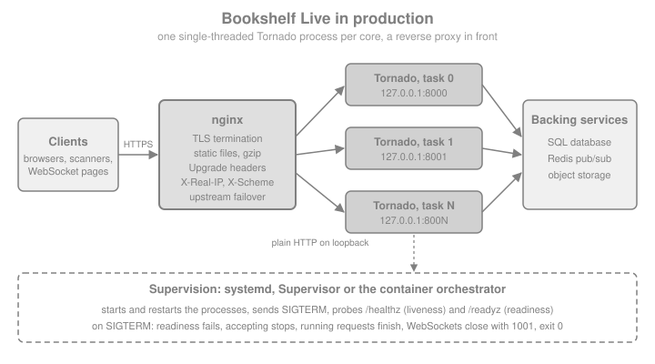

Running & Deploying
|
This content was generated with the assistance of AI and should be verified against the official documentation before being relied on in production. |
This page is written against Tornado 6.5.10 (released 2026-09-15), checked on 2026-10-07, on Python 3.13. Tornado 6.6 is only available as the alpha 6.6a1; what is said about 6.6 below is upcoming and may still change. Every Python example was executed with those versions: the server of the page was started as real operating system processes on loopback ports, queried over HTTP and WebSocket, killed and stopped with signals, and the outputs shown come from those runs (on macOS, so the points where Linux behaves differently are called out). The nginx, systemd, Supervisor, Dockerfile and Kubernetes files are shown as configuration, not Python: they are checked against the official documentation of each tool but were not executed, because none of those tools was available in the verification environment.
Tornado is its own HTTP server, so there is no WSGI server to choose and nothing like Gunicorn in front of it: a
production deployment is a Python program that you start, several copies of it (one per CPU core, because each copy is a
single thread), a reverse proxy that terminates TLS and serves static files, and something that supervises the
processes and tells them to stop. The official guide to running and deploying is short; this page walks through each of
its pieces with the Bookshelf Live application, and adds the parts that the guide leaves out and that decide whether
a deployment is quiet or painful: shutting down without cutting requests, health checks, container signals and
monitoring. The pieces that this page relies on are explained elsewhere in the section: the single-threaded event loop
in Asynchronous I/O & the Event Loop, the options of
HTTPServer and TLS in TCP Servers, IOStream & Low-level Networking,
and static files in Static Files.
The Topology

Each box has one job:
-
Tornado processes. Each one runs one
asyncioevent loop in one thread. Parallelism across cores comes only from running more processes (see Using More Than One CPU), so the processes must not share state in memory: the shelf of Bookshelf Live that earlier pages kept in a dictionary has to live in a database or in Redis as soon as there are two processes. The same goes for WebSocket rooms (fan-out between processes needs Redis pub/sub or a similar bus, see WebSockets) and for anything cached in a module global. -
The reverse proxy. It terminates TLS, absorbs slow clients, serves
/static/straight from disk, compresses, caps request sizes and spreads connections across the processes, retrying another one when a process is gone. -
The supervisor. It starts the processes at boot, restarts them when they crash, sends them a signal when it is time to stop and probes them. On a server it is systemd or Supervisor; in a container platform it is the orchestrator.
The same topology applies whether the processes live on one machine or in many containers; only the names of the boxes change. Compare the equivalent pages for FastAPI, for Django, for Pyramid and for Flask Deployment: WSGI Servers & Proxies: the proxy and the supervisor are the same, and what changes is the process in the middle, which for Flask and Django is a WSGI server such as Gunicorn that forks workers and for Tornado is your own program.
The Production Entry Point
Everything below runs the same program, so it is written once. It is a single file, bookshelf_live.py, and the first
example writes it into a temporary directory together with a few helpers that start it as a subprocess on a free
loopback port, query it and stop it. Read the program before reading the rest of the page: every later section is
about one of its lines.
Five decisions in it matter in production:
-
Configuration comes from the environment (
PORT,HOST,BOOKSHELF_PROCESSES,BOOKSHELF_BEHIND_PROXYand so on), so the same file runs on a laptop, under systemd and in a container. The cookie secret is read fromBOOKSHELF_COOKIE_SECRET; if it is missing the program generates a random one withsecrets.token_hex, which is fine for one process but wrong for several processes or several replicas, because each would sign cookies with a different key. Real deployments always provide the variable, from a root-owned environment file or a secret store, never from the source. -
Sockets are bound before anything else.
bind_socketsruns beforefork_processesand before the event loop exists, which is the rule of the multi-process mode. -
The event loop is started by
asyncio.run, after the fork, in each process. -
Signals are handled with
loop.add_signal_handler, the asyncio way.IOLoop.add_callback_from_signalhas been deprecated since Tornado 6.4 and is slated for removal in Tornado 7.0. -
Handlers are counted (
BaseHandler), so that shutdown can wait for the requests that are running.
import json
import os
import pathlib
import signal
import socket
import subprocess
import sys
import tempfile
import time
import urllib.error
import urllib.request
ROOT = pathlib.Path(tempfile.mkdtemp(prefix="bookshelf-live-"))
SOURCE = '''\
"""Bookshelf Live: the production entry point."""
import asyncio
import logging
import os
import secrets
import signal
import time
import tornado.process
from tornado.httpserver import HTTPServer
from tornado.netutil import bind_sockets
from tornado.web import Application, RequestHandler
from tornado.websocket import WebSocketHandler
log = logging.getLogger("bookshelf")
class BaseHandler(RequestHandler):
"""Counts the requests that are being served, for graceful shutdown."""
def prepare(self):
self.settings["inflight"] += 1
self._counted = True
def _leave(self):
if self._counted:
self._counted = False
self.settings["inflight"] -= 1
def on_finish(self):
self._leave()
def on_connection_close(self):
self._leave()
class Live(WebSocketHandler):
def open(self):
self.settings["sockets"].add(self)
def on_close(self):
self.settings["sockets"].discard(self)
class Health(BaseHandler):
def get(self): # liveness: the loop answers
self.write({"status": "ok"})
class Ready(BaseHandler):
def get(self): # readiness: false while draining
if self.settings["draining"]:
self.set_status(503)
self.write({"status": "draining"})
else:
self.write({"status": "ready"})
class Slow(BaseHandler):
async def get(self):
await asyncio.sleep(float(self.get_argument("seconds", "0.5")))
self.write({"done": True, "pid": os.getpid(), "task": tornado.process.task_id()})
class WhoAmI(BaseHandler):
def get(self):
self.write({
"remote_ip": self.request.remote_ip,
"protocol": self.request.protocol,
"pid": os.getpid(),
"task": tornado.process.task_id(),
})
def log_request(handler):
log.info("%s %s %s %.1fms", handler.get_status(), handler.request.method,
handler.request.uri, handler.request.request_time() * 1000)
def make_app():
return Application(
[("/healthz", Health), ("/readyz", Ready), ("/slow", Slow),
("/whoami", WhoAmI), ("/live", Live)],
cookie_secret=os.environ.get("BOOKSHELF_COOKIE_SECRET") or secrets.token_hex(32),
log_function=log_request,
inflight=0, draining=False, sockets=set(),
)
def make_server(app):
return HTTPServer(
app,
xheaders=os.environ.get("BOOKSHELF_BEHIND_PROXY") == "1",
trusted_downstream=os.environ.get("BOOKSHELF_TRUSTED_PROXIES", "").split() or None,
max_body_size=int(os.environ.get("BOOKSHELF_MAX_BODY", 1_000_000)),
idle_connection_timeout=float(os.environ.get("BOOKSHELF_IDLE", 3600)),
)
async def drain(app, servers, grace, notice):
app.settings["draining"] = True # /readyz now answers 503
await asyncio.sleep(notice) # let the load balancer notice
for server in servers:
server.stop() # stop accepting
for ws in list(app.settings["sockets"]):
ws.close(1001, "going away") # close_all_connections skips these
deadline = time.monotonic() + grace
while app.settings["inflight"] and time.monotonic() < deadline:
await asyncio.sleep(0.02) # let running requests finish
left = app.settings["inflight"]
if left:
log.warning("grace period over, cutting %d requests", left)
await asyncio.gather(*(s.close_all_connections() for s in servers))
async def serve(sockets):
app = make_app()
server = make_server(app)
server.add_sockets(sockets)
stop = asyncio.Event()
loop = asyncio.get_running_loop()
for sig in (signal.SIGTERM, signal.SIGINT):
loop.add_signal_handler(sig, stop.set)
log.info("serving on pid %d, task %s", os.getpid(), tornado.process.task_id())
await stop.wait()
await drain(app, [server], float(os.environ.get("BOOKSHELF_GRACE", 10)),
float(os.environ.get("BOOKSHELF_NOTICE", 0)))
log.info("bye from pid %d", os.getpid())
def main():
logging.basicConfig(level=logging.INFO, format="%(process)d %(message)s")
port = int(os.environ.get("PORT", 8888))
address = os.environ.get("HOST", "127.0.0.1")
reuse_port = os.environ.get("BOOKSHELF_REUSE_PORT") == "1"
sockets = bind_sockets(port, address, reuse_port=reuse_port) # before any fork
processes = int(os.environ.get("BOOKSHELF_PROCESSES", 1))
if processes != 1:
tornado.process.fork_processes(processes) # no IOLoop yet
asyncio.run(serve(sockets))
if __name__ == "__main__":
main()
'''
(ROOT / "bookshelf_live.py").write_text(SOURCE)
def free_port() -> int:
with socket.socket() as probe:
probe.bind(("127.0.0.1", 0))
return probe.getsockname()[1]
def get(port: int, path: str, headers: dict | None = None) -> dict:
request = urllib.request.Request(f"http://127.0.0.1:{port}{path}", headers=headers or {})
with urllib.request.urlopen(request, timeout=5) as response:
return json.load(response)
def start(port: int | None = None, **env) -> tuple[subprocess.Popen, int]:
"""Start bookshelf_live.py in its own session and wait until it answers."""
port = port or free_port()
process = subprocess.Popen(
[sys.executable, str(ROOT / "bookshelf_live.py")],
env={**os.environ, "PORT": str(port), **env},
stderr=subprocess.PIPE, text=True, start_new_session=True)
for _ in range(200):
try:
get(port, "/healthz")
return process, port
except OSError:
time.sleep(0.05)
raise RuntimeError("the server did not start")
def stop(process: subprocess.Popen, sig=signal.SIGTERM, group: bool = False) -> tuple[int, str]:
"""Signal the process (or its whole process group) and collect exit code and log."""
if group:
os.killpg(process.pid, sig)
else:
process.send_signal(sig)
code = process.wait(timeout=20)
return code, process.stderr.read()Source: Tornado: Running and deploying
A first run of the program as one process shows the three things a supervisor cares about: it starts and answers, it
logs one line per request to standard error (the log_function hook), and it exits with status zero when it is told to
stop.
process, port = start()
print(get(port, "/healthz"), get(port, "/readyz"))
code, log = stop(process)
print("exit status:", code)
print(log)Output:
{'status': 'ok'} {'status': 'ready'}
exit status: 0
12345 serving on pid 12345, task None
12345 200 GET /healthz 1.3ms
12345 200 GET /healthz 0.5ms
12345 200 GET /readyz 0.4ms
12345 bye from pid 12345Using More Than One CPU
One Tornado process uses one core. The official guide gives the rule: run one process per core, and put a load balancer such as nginx in front of them. There are three ways to get the processes, summarised here and shown one by one below.
| Pattern | How it works | When to choose it |
|---|---|---|
One process per container or unit |
The supervisor starts N copies of the same command, each with its own port (systemd template units, Supervisor |
The default. Each process fails and restarts alone, each is stopped with a plain |
|
Every copy binds the same port with |
Several processes on one host behind no load balancer, or rolling restarts on one host: start the new copy, stop the old one. The distribution is a kernel feature, see the pitfall below. |
|
One program binds the sockets, forks N children that share them, and a parent restarts children that die. |
One command, one port, all cores, on Unix. The constraints are the strictest of the three. |
One Port, Several Copies: reuse_port
tornado.netutil.bind_sockets and TCPServer.listen take reuse_port (since Tornado 6.2). With it set, any number of
processes can bind the same address and port. On Linux the kernel balances new connections across them (see socket(7)).
Other systems behave differently: the example below starts two copies on the same port, and on the macOS machine where
the page was verified every connection reached the same process, because BSD kernels deliver to one socket only.
Treat reuse_port as a Linux deployment tool, and test the distribution on the kernel you deploy to.
port = free_port()
first, _ = start(port, BOOKSHELF_REUSE_PORT="1")
second = subprocess.Popen([sys.executable, str(ROOT / "bookshelf_live.py")], # same port, no error
env={**os.environ, "PORT": str(port), "BOOKSHELF_REUSE_PORT": "1"},
stderr=subprocess.PIPE, text=True)
time.sleep(1) # give it time to bind
pids = {get(port, "/whoami")["pid"] for _ in range(40)}
print("second copy running:", second.poll() is None, "| distinct processes answering:", len(pids))
print("exit codes:", stop(first)[0], stop(second)[0])Output:
second copy running: True | distinct processes answering: 1
exit codes: 0 0Without reuse_port, the second copy would fail with "address already in use". With it, there is a security
consideration on shared hosts: any process of the same user can join the port and receive a share of the traffic, so
use it only on hosts where every process of that user is yours.
One Command, All Cores: bind_sockets and fork_processes
tornado.process.fork_processes(num_processes, max_restarts=None) forks the workers. A value of None or zero means one
child per core. The parent never returns from the call while children are alive: it supervises them, and each child
gets back its task id, a number from 0 to N minus 1, also available as tornado.process.task_id(). The rules from the
documentation, all visible in bookshelf_live.py:
-
Create the sockets first (
bind_sockets) and callfork_processesbefore anyIOLooporasyncioloop is created or even referenced, because a loop and its file descriptors do not survive a fork. -
Do not combine it with autoreload (
debug=True), which is development-only anyway. -
A child that exits abnormally (killed by a signal, or with a non-zero status) is restarted with the same task id, up to
max_restartstimes, 100 by default; after that the parent raisesRuntimeError("Too many child restarts, giving up"). A child that exits with status zero is not restarted, and when all children have exited cleanly the parent callssys.exit(0). -
It is not available on Windows.
-
The older
TCPServer.bindplusstart(num_processes)form is deprecated since 6.2 and creating processes instartwill be removed.
import collections
process, port = start(BOOKSHELF_PROCESSES="3")
seen = collections.Counter(get(port, "/whoami")["task"] for _ in range(60))
print("task ids that answered:", sorted(seen), dict(seen))
victim = get(port, "/whoami")["pid"]
os.kill(victim, signal.SIGKILL) # simulate a crash of one worker
time.sleep(0.5) # the parent notices and forks a replacement
print("still answering after the crash:", get(port, "/whoami")["task"] in (0, 1, 2))
code, log = stop(process, group=True) # signal the whole process group
print("parent exit:", code)
print([line.split(" ", 1)[1] for line in log.splitlines() if "child" in line or "Starting" in line or "bye" in line])Output:
task ids that answered: [1, 2] {1: 10, 2: 50}
still answering after the crash: True
parent exit: -15
['Starting 3 processes', 'child 2 (pid 41314) killed by signal 9, restarting', 'bye from pid 41315', 'bye from pid 41313', 'bye from pid 41312']Three consequences follow from the output. The workers share one listening socket, so the kernel hands each new
connection to whichever worker accepts first, which is not round robin (the counts above are uneven, and in this run one worker answered none of the 60 requests; the numbers differ on every run). The parent
only supervises, and it does not drain or forward signals: the example signalled the whole process group, which is what
systemd does by default (KillMode=control-group) and what Supervisor does with stopasgroup=true. A SIGTERM sent
to the parent alone would kill the parent and leave the children running as orphans. And a restart policy that loops
forever on a crash at start-up is bounded by max_restarts, so a broken release eventually fails loudly instead of
spinning.
The official guide adds a caveat worth repeating: with the fork pattern zero-downtime updates are difficult, because the sockets belong to a parent that you cannot replace without dropping them. Running separate units (or containers) behind a proxy and replacing them one at a time is easier, and that is the pattern used for the rest of the page.
Sizing: start with one process per physical core, measure, and keep memory in mind, because each process holds its own copy of the application, caches and connection pools. A database pool of 10 connections becomes 40 with four processes. Python 3.13 and later offer experimental free-threaded builds, but Tornado remains a single event loop per process (see the free-threading section of Asynchronous I/O & the Event Loop).
Process Managers
Nothing in Tornado starts the processes at boot or restarts them when fork_processes is not used; that is the job of
systemd or Supervisor. Both files below start four copies on ports 8000 to 8003, the upstream that the nginx
configuration of the next section lists.
A systemd template unit, /etc/systemd/system/bookshelf-live@.service, started with
systemctl enable --now bookshelf-live@8000 bookshelf-live@8001 bookshelf-live@8002 bookshelf-live@8003. The instance
name after the @ becomes %i, the port:
[Unit]
Description=Bookshelf Live on port %i
After=network.target
[Service]
User=bookshelf
Group=bookshelf
WorkingDirectory=/opt/bookshelf-live
# Root-owned, mode 0600: contains BOOKSHELF_COOKIE_SECRET and the database URL.
EnvironmentFile=/etc/bookshelf-live.env
Environment=PORT=%i HOST=127.0.0.1 BOOKSHELF_BEHIND_PROXY=1 BOOKSHELF_TRUSTED_PROXIES=127.0.0.1
ExecStart=/opt/bookshelf-live/venv/bin/python /opt/bookshelf-live/bookshelf_live.py
Restart=on-failure
RestartSec=2
# SIGTERM is the default stop signal. The program waits up to BOOKSHELF_GRACE seconds (10 by
# default) after a notice delay, so leave room: systemd sends SIGKILL after TimeoutStopSec.
KillSignal=SIGTERM
TimeoutStopSec=30
LimitNOFILE=65536
NoNewPrivileges=yes
ProtectSystem=strict
PrivateTmp=yes
[Install]
WantedBy=multi-user.targetSource: systemd.service
The same four processes under Supervisor. %(process_num)02d is expanded by Supervisor in command and
process_name; stopasgroup and killasgroup matter only if the program uses fork_processes:
[program:bookshelf-live]
command=/usr/bin/env PORT=80%(process_num)02d /opt/bookshelf-live/venv/bin/python /opt/bookshelf-live/bookshelf_live.py
process_name=%(program_name)s_%(process_num)02d
numprocs=4
directory=/opt/bookshelf-live
user=bookshelf
environment=HOST="127.0.0.1",BOOKSHELF_BEHIND_PROXY="1",BOOKSHELF_TRUSTED_PROXIES="127.0.0.1"
autostart=true
autorestart=true
startsecs=3
stopsignal=TERM
stopwaitsecs=30
stopasgroup=true
killasgroup=true
redirect_stderr=true
stdout_logfile=/var/log/bookshelf-live/%(program_name)s_%(process_num)02d.logBoth files read secrets from the environment. The secret belongs in the root-owned environment file of systemd (or in
an environment file that Supervisor’s own configuration includes), never in the unit file, in the repository or in a
command line, where ps would show it. Restart=on-failure restarts a crash but not a clean systemctl stop, which is
exactly the difference the exit status zero of the program provides.
nginx in Front
The official guide recommends nginx as a front end, for the reasons listed in the topology: it serves static files
without bothering Python, absorbs slow clients, terminates TLS and fails over between processes. The configuration of the
guide is the starting point; the one below keeps its structure (an upstream block listing the processes, a
/static/ location, proxy_set_header lines for Host, X-Real-IP and X-Scheme, proxy_next_upstream error) and
adds what Bookshelf Live needs on top: HTTPS, the WebSocket upgrade headers and a location for server-sent events.
upstream bookshelf_live {
server 127.0.0.1:8000;
server 127.0.0.1:8001;
server 127.0.0.1:8002;
server 127.0.0.1:8003;
keepalive 32;
}
map $http_upgrade $connection_upgrade {
default upgrade;
'' close;
}
server {
listen 80;
server_name books.example.org;
return 301 https://$host$request_uri;
}
server {
listen 443 ssl;
server_name books.example.org;
ssl_certificate /etc/ssl/bookshelf/fullchain.pem;
ssl_certificate_key /etc/ssl/bookshelf/privkey.pem;
# Keep this equal to (or smaller than) max_body_size of the HTTPServer.
client_max_body_size 1m;
gzip on;
gzip_types text/plain text/css application/json application/javascript;
location ^~ /static/ {
root /var/www/bookshelf;
expires 1y; # static_url() adds a content hash, so the URL changes with the file
}
# WebSockets: HTTP/1.1, the Upgrade headers, and a read timeout longer than the ping interval.
location /live {
proxy_pass http://bookshelf_live;
proxy_http_version 1.1;
proxy_set_header Upgrade $http_upgrade;
proxy_set_header Connection $connection_upgrade;
proxy_set_header Host $http_host;
proxy_set_header X-Real-IP $remote_addr;
proxy_set_header X-Scheme $scheme;
proxy_read_timeout 120s;
}
# Server-sent events and long polling: do not buffer the response.
location /events {
proxy_pass http://bookshelf_live;
proxy_http_version 1.1;
proxy_set_header Connection "";
proxy_set_header Host $http_host;
proxy_set_header X-Real-IP $remote_addr;
proxy_set_header X-Scheme $scheme;
proxy_buffering off;
proxy_read_timeout 300s;
}
location / {
proxy_pass http://bookshelf_live;
proxy_http_version 1.1;
proxy_set_header Connection "";
proxy_set_header Host $http_host;
proxy_set_header X-Real-IP $remote_addr;
proxy_set_header X-Scheme $scheme;
proxy_redirect off;
proxy_next_upstream error;
}
}Source: nginx: WebSocket proxying
The directives that matter, and why:
| Directive | Why |
|---|---|
|
WebSocket needs HTTP/1.1 and the two hop-by-hop headers, which nginx does not forward on its own. Without them the handshake fails and the browser reports a failed WebSocket connection. The |
|
nginx closes a proxied connection that is silent for 60 seconds by default. A WebSocket that is idle between messages would be cut; either raise the timeout above the ping interval or send pings more often, with |
|
Responses are buffered by default, so a server-sent event would arrive in bursts or at the end. The handler can also send |
|
nginx answers 413 to a larger body before Tornado sees it. The default of |
|
Retry on another upstream only on connection errors. Do not extend it to timeouts for non-idempotent requests, or a slow |
|
The headers that |
|
Reuses connections to the upstream instead of opening one per request. |
Source: nginx: ngx_http_proxy_module
Telling Tornado About the Proxy: xheaders and trusted_downstream
Behind nginx, every connection comes from 127.0.0.1 over plain HTTP, so without help request.remote_ip is always the
proxy and request.protocol is always http: absolute URLs built with request.full_url(), redirects and secure
cookies would be wrong, and rate limits and audit logs would see one client. HTTPServer(xheaders=True) makes Tornado
trust X-Real-IP or X-Forwarded-For for the client address and X-Scheme or X-Forwarded-Proto for the protocol.
trusted_downstream is a list of hosts to skip when reading a chain in X-Forwarded-For, and protocol="https" is the
alternative for a proxy that terminates TLS but sets no headers.
The program reads those options from BOOKSHELF_BEHIND_PROXY and BOOKSHELF_TRUSTED_PROXIES. The example plays nginx
by sending the headers itself, which shows both what works and why the option is dangerous without a proxy:
forged = {"X-Real-IP": "203.0.113.9", "X-Scheme": "https"}
chain = {"X-Forwarded-For": "203.0.113.9, 127.0.0.1", "X-Forwarded-Proto": "https"}
direct, port = start() # xheaders off: the default
print("off: ", get(port, "/whoami", forged)["remote_ip"], get(port, "/whoami", forged)["protocol"])
stop(direct)
proxied, port = start(BOOKSHELF_BEHIND_PROXY="1", BOOKSHELF_TRUSTED_PROXIES="127.0.0.1")
who = get(port, "/whoami", forged)
print("on, X-Real-IP: ", who["remote_ip"], who["protocol"])
who = get(port, "/whoami", chain)
print("on, X-Forwarded-For with a trusted proxy:", who["remote_ip"], who["protocol"])
stop(proxied)Output:
off: 127.0.0.1 http
on, X-Real-IP: 203.0.113.9 https
on, X-Forwarded-For with a trusted proxy: 203.0.113.9 httpsSource: Tornado: HTTPServer
Bind Tornado to 127.0.0.1 (the HOST variable) or to a Unix socket so that clients cannot reach it without the proxy:
if they can, any of them can claim any address by sending the header. In a container, the proxy is a sidecar or an
ingress controller, and the trusted address is that of the pod network, not loopback; the program takes the list from
the environment for that reason. The options and defaults of HTTPServer that matter in deployment are:
| Option | Default | Production advice |
|---|---|---|
|
|
Enable only behind a proxy that overwrites the headers it forwards (nginx with |
|
|
Addresses of proxies to skip in |
|
|
Set to |
|
100 MB |
Lower it to what the application accepts, and match the proxy. A handler decorated with |
|
64 KB |
Rarely changed; an oversized header block closes the connection without an answer. |
|
one hour |
Lower it if many idle keep-alive clients hold file descriptors; the proxy normally closes them first. |
|
none |
Set it to bound how long a client may take to send a body, a defence against slow-body clients (together with the proxy’s own timeouts). |
|
|
Enable only if clients really send gzip request bodies. |
|
|
Almost never; it defeats the proxy’s |
TLS: Terminate at the Proxy, or in Tornado
The usual design terminates TLS in nginx (certificates, renewal and protocol policy in one place) and speaks plain HTTP
on loopback. Tornado can also terminate TLS itself: pass an ssl.SSLContext as ssl_options, which makes connections
SSLIOStream objects and request.protocol "https". That is useful for an internal service, a container without a
proxy, or end-to-end encryption to a mesh sidecar. The example creates a throwaway self-signed certificate with the
openssl command line tool (the scratch directory is deleted at the end) and verifies that the client validates it.
In a real deployment the certificate and key paths come from the environment and the certificate comes from your CA.
import asyncio
import shutil
import ssl
from tornado.httpclient import AsyncHTTPClient
from tornado.httpserver import HTTPServer
from tornado.netutil import bind_sockets
from tornado.web import Application, RequestHandler
class Proto(RequestHandler):
def get(self):
self.write({"protocol": self.request.protocol})
async def https_demo():
certs = pathlib.Path(tempfile.mkdtemp(prefix="bookshelf-tls-"))
cert, key = certs / "cert.pem", certs / "key.pem"
subprocess.run(
["openssl", "req", "-x509", "-newkey", "rsa:2048", "-nodes", "-days", "1",
"-subj", "/CN=localhost", "-addext", "subjectAltName=DNS:localhost,IP:127.0.0.1",
"-keyout", str(key), "-out", str(cert)],
check=True, capture_output=True)
context = ssl.create_default_context(ssl.Purpose.CLIENT_AUTH)
context.load_cert_chain(cert, key)
context.minimum_version = ssl.TLSVersion.TLSv1_2
sockets = bind_sockets(0, "127.0.0.1")
https_port = sockets[0].getsockname()[1]
server = HTTPServer(Application([("/", Proto)]), ssl_options=context)
server.add_sockets(sockets)
client_context = ssl.create_default_context(cafile=str(cert)) # trust only our certificate
client = AsyncHTTPClient()
response = await client.fetch(f"https://127.0.0.1:{https_port}/", ssl_options=client_context)
print(response.body)
server.stop()
await server.close_all_connections()
client.close()
shutil.rmtree(certs)
asyncio.run(https_demo())Output:
b'{"protocol": "https"}'ssl_options also accepts a dictionary of options such as certfile and keyfile, but an SSLContext is clearer and lets you set the minimum protocol version. Never disable certificate verification in the
client to make a test pass. TLS 1.2 is the minimum set above; modern proxies and clients speak 1.3. Browsers need the
Strict-Transport-Security header to remember that the site is HTTPS-only, which belongs in the nginx server block
(add_header Strict-Transport-Security "max-age=31536000" always;) once HTTPS works. If cookies set by Tornado must be
secure, set the Secure attribute explicitly (set_signed_cookie(..., secure=True) passes it on to the cookie)
or make sure xheaders gives the correct protocol; see
Authentication & Signed Cookies.
Graceful Shutdown
A deployment stops processes constantly: every release, every scale-down, every node drain. Each stop is a request that may be cut and a WebSocket that disappears, unless the program shuts down in an orderly way. The sequence has five steps:
-
Stop being ready: the readiness endpoint answers 503, so the load balancer or Kubernetes stops sending new requests.
-
Wait a short notice period for the load balancer to notice.
-
Stop accepting connections (
HTTPServer.stop(); this closes the listening sockets only). -
Let the requests that are running finish, up to a grace period.
-
Close what is left (
close_all_connections(), and every WebSocket by hand) and exit with status zero.
The fourth step is the one that the documentation does not spell out, and it is the trap. close_all_connections() is
documented as closing all open connections and waiting for them to finish, and the usual advice is stop() followed by
await close_all_connections(). But it closes the stream of a connection that is in the middle of a request, and the
response of that request is lost. The example shows it with a 0.5 second handler:
import asyncio
from tornado.httpclient import AsyncHTTPClient
from tornado.httpserver import HTTPServer
from tornado.testing import bind_unused_port
from tornado.web import Application, RequestHandler
class Slow(RequestHandler):
async def get(self):
await asyncio.sleep(0.5)
self.write("done")
async def naive_shutdown():
sock, port = bind_unused_port()
server = HTTPServer(Application([("/slow", Slow)]))
server.add_socket(sock)
client = AsyncHTTPClient()
pending = asyncio.ensure_future(client.fetch(f"http://127.0.0.1:{port}/slow"))
await asyncio.sleep(0.1) # the request is now being served
server.stop()
await server.close_all_connections() # closes the busy connection too
try:
await pending
except Exception as error:
print("the in-flight request failed:", type(error).__name__)
client.close()
asyncio.run(naive_shutdown())Output:
the in-flight request failed: HTTPStreamClosedErrorThat is why bookshelf_live.py counts requests (BaseHandler.prepare adds one, on_finish and on_connection_close
subtract one) and its drain coroutine waits for the counter to reach zero, bounded by BOOKSHELF_GRACE, before it
calls close_all_connections(), which then closes only idle keep-alive connections. Signals are caught with
loop.add_signal_handler(signal.SIGTERM, ...), which is the asyncio API and works because the loop runs in the main
thread; it is not available on Windows. The next example is the whole story: a slow request is in flight, a WebSocket
client is connected, SIGTERM arrives, and we watch what the program does.
import threading
from tornado.websocket import websocket_connect
process, port = start(BOOKSHELF_NOTICE="0.4", BOOKSHELF_GRACE="5")
outcome = {}
def slow_request():
outcome["slow"] = get(port, "/slow?seconds=1.5")
async def drain_demo():
socket_client = await websocket_connect(f"ws://127.0.0.1:{port}/live")
worker = threading.Thread(target=slow_request)
worker.start()
await asyncio.sleep(0.3) # the slow request is being served
process.send_signal(signal.SIGTERM) # what the supervisor does
await asyncio.sleep(0.15)
try:
get(port, "/readyz")
except urllib.error.HTTPError as error: # readiness already fails during the notice period
outcome["readyz"] = error.code
message = await socket_client.read_message() # None: the server closed the WebSocket
outcome["websocket"] = (message, socket_client.close_code)
await asyncio.get_running_loop().run_in_executor(None, worker.join)
asyncio.run(drain_demo())
code = process.wait(timeout=20)
log = process.stderr.read()
print("slow request finished:", outcome["slow"]["done"])
print("readiness during the drain:", outcome["readyz"])
print("WebSocket closed with:", outcome["websocket"])
print("exit status:", code)
print(log)Output:
slow request finished: True
readiness during the drain: 503
WebSocket closed with: (None, 1001)
exit status: 0
41321 serving on pid 41321, task None
41321 200 GET /healthz 1.1ms
41321 101 GET /live 0.5ms
41321 503 GET /readyz 0.5ms
41321 200 GET /slow?seconds=1.5 1502.4ms
41321 bye from pid 41321Source: Python: loop.add_signal_handler
The running request completed, the WebSocket client was told 1001 ("going away", which well-behaved clients answer
by reconnecting to another process) and the process left with status zero after logging bye. A reconnecting client is
essential: during every deployment all WebSocket clients of the stopped process reconnect at once, so give clients an
exponential backoff with jitter and size the remaining processes for the burst. Keep these rules:
-
Budget the time. Notice delay plus grace period must be shorter than the supervisor’s kill timeout:
TimeoutStopSecin systemd,stopwaitsecsin Supervisor,terminationGracePeriodSecondsin Kubernetes. After that time the supervisor sendsSIGKILLand everything in flight is lost anyway. -
Cancel background work too. Tasks created with
asyncio.create_taskand not stored are not waited for at shutdown; keep a reference and cancel or await them indrain(see Coroutines & asyncio). -
Close external resources last: database pools, Redis connections and HTTP clients (
AsyncHTTPClient.close()), after the requests that use them have finished. -
Ctrl-C is the same path. The program also handles
SIGINT, so the interactive stop in a terminal is graceful too. -
Do not rely on the debugger or autoreload. They are development tools, and the program never enables them.
Because the sequence has to be written by hand, put it in a helper module once and reuse it for every Tornado service
you run; it is the production counterpart of the close_all_connections lines at the end of every example on the other
pages of this section.
Docker and Kubernetes
One Tornado process per container is the simplest and most robust layout: the orchestrator is the supervisor and the load
balancer, replicas are the unit of scaling, a crash restarts exactly one process, and SIGTERM reaches the program
directly. Details of the tools themselves are in the Docker and
Kubernetes sections; this is what Tornado adds.
The image: the exec form of CMD makes the Python process PID 1, which receives the SIGTERM that docker stop sends.
The shell form would put /bin/sh at PID 1 and the signal would never reach the program, which is then killed after the
timeout and loses every request. The dependencies are installed in one layer and the application is run by an
unprivileged user; see Dockerfile Fundamentals and
Image Best Practices & Security.
FROM python:3.13-slim
ENV PYTHONUNBUFFERED=1 PYTHONDONTWRITEBYTECODE=1
WORKDIR /app
COPY requirements.txt .
RUN pip install --no-cache-dir -r requirements.txt # pins tornado==6.5.10 and the rest
COPY bookshelf_live.py .
RUN useradd --system --uid 10001 bookshelf
USER bookshelf
# 0.0.0.0 inside the container: the ingress or sidecar is the only way in.
ENV HOST=0.0.0.0 PORT=8888
EXPOSE 8888
# Exec form: Python is PID 1 and receives SIGTERM directly.
CMD ["python", "bookshelf_live.py"]The Kubernetes side: liveness and readiness probes map to /healthz and /readyz, the secret comes from a Secret
(see Secrets), and the termination grace period is longer than the notice delay
plus the grace period of the program. Because the program already fails readiness during the notice delay, no preStop
hook is needed. When there are several replicas, the cookie secret has to be the same in all of them, which is one more
reason to read it from a Secret.
apiVersion: apps/v1
kind: Deployment
metadata:
name: bookshelf-live
spec:
replicas: 3
selector:
matchLabels: {app: bookshelf-live}
strategy:
type: RollingUpdate
rollingUpdate: {maxUnavailable: 0, maxSurge: 1}
template:
metadata:
labels: {app: bookshelf-live}
spec:
terminationGracePeriodSeconds: 40
containers:
- name: app
image: registry.example.org/bookshelf-live:1.4.0
ports:
- containerPort: 8888
env:
- {name: BOOKSHELF_BEHIND_PROXY, value: "1"}
- {name: BOOKSHELF_TRUSTED_PROXIES, value: "10.0.0.11 10.0.0.12"} # see the notes below
- {name: BOOKSHELF_NOTICE, value: "5"}
- {name: BOOKSHELF_GRACE, value: "25"}
- name: BOOKSHELF_COOKIE_SECRET
valueFrom:
secretKeyRef: {name: bookshelf-live, key: cookie-secret}
readinessProbe:
httpGet: {path: /readyz, port: 8888}
periodSeconds: 5
livenessProbe:
httpGet: {path: /healthz, port: 8888}
periodSeconds: 10
failureThreshold: 3
resources:
requests: {cpu: "500m", memory: 256Mi}
limits: {memory: 512Mi}Notes on the manifest:
-
trusted_downstreamtakes a list of addresses, not networks, and the program splitsBOOKSHELF_TRUSTED_PROXIESon whitespace, so the two addresses written above are placeholders for those of the ingress controller pods. Put the real addresses there; if they change often, have the ingress overwriteX-Forwarded-Forand keep onlyxheadersenabled. -
maxUnavailable: 0with a readiness probe gives a rolling update with no capacity dip; see Deployment Strategies. -
The CPU request of half a core matches one single-threaded event loop; a CPU limit below one core throttles the loop and shows up as latency, which is why only a memory limit is set. Scale with replicas and with the autoscaler (see Autoscaling) rather than with
fork_processes. -
The grace period in the program (notice 5 plus grace 25) is shorter than
terminationGracePeriodSeconds: 40. -
The probes are explained in Health Probes & Lifecycle; Ingress and TLS in Ingress, which replaces nginx in this topology.
Source: Kubernetes: Pod termination
Health Checks and Monitoring
Two endpoints, with different meanings, are enough for the orchestrator, and both are in bookshelf_live.py:
-
Liveness (
/healthz): the process is up and its event loop answers. It must be cheap and must not check the database; otherwise a database outage makes every pod restart, which makes things worse. A blocked event loop fails it, which is the point: a process that stopped answering is restarted. -
Readiness (
/readyz): the process wants traffic. It fails during shutdown, and in a real application also when a required dependency (the database pool, a cache warm-up) is not ready. A failing readiness removes the process from the load balancer without restarting it.
What to watch, in the order in which problems usually appear:
-
Access and application logs. Tornado logs through the standard
loggingmodule, with three loggers:tornado.access(one line per request, fromlog_functionor the default),tornado.application(uncaught exceptions in handlers) andtornado.general(the framework). Write to standard output or standard error and let the supervisor or the container runtime collect them, as the program does.tornado.options.parse_command_lineandenable_pretty_logginggive a coloured, human format; in production use a plain or JSON formatter on the logging handler. -
Event loop lag. The best single health signal of a Tornado process: how late a timer fires. A handler that blocks the loop (a synchronous database call, a big JSON dump, a CPU-bound loop) delays every other request in the process. The monitor below measures it with a
PeriodicCallbackand is exposed as a metric in real deployments. Python’s asyncio debug mode (PYTHONASYNCIODEBUG=1or-X dev) additionally logs callbacks that take longer thanloop.slow_callback_duration(100 ms by default); use it in staging, not in production, because it slows the loop. -
In-flight requests, connections and open WebSockets, which the program already counts.
-
Latency percentiles and error rates per route, from the access log or from a metrics library fed in
log_function, which receives every finished handler.
import time as clock
from tornado.ioloop import PeriodicCallback
class LagMonitor:
"""How late does a 50 ms timer fire? Export `worst` as a gauge."""
def __init__(self, interval=0.05):
self.interval = interval
self.worst = 0.0
self._last = clock.perf_counter()
self._timer = PeriodicCallback(self._tick, interval * 1000)
def _tick(self):
now = clock.perf_counter()
self.worst = max(self.worst, now - self._last - self.interval)
self._last = now
def start(self):
self._last = clock.perf_counter()
self._timer.start()
def stop(self):
self._timer.stop()
async def lag_demo():
monitor = LagMonitor()
monitor.start()
await asyncio.sleep(0.3)
print(f"idle loop, worst lag: {monitor.worst * 1000:.0f} ms")
clock.sleep(0.4) # a handler that blocks the loop
await asyncio.sleep(0.1)
print(f"after a 400 ms blocking call, worst lag: {monitor.worst * 1000:.0f} ms")
monitor.stop()
asyncio.run(lag_demo())Output:
idle loop, worst lag: 2 ms
after a 400 ms blocking call, worst lag: 352 msSource: Tornado: PeriodicCallback
An alert on lag above, say, 100 ms for several minutes catches the "someone added a blocking call" release before users do. See Asynchronous I/O & the Event Loop for finding and fixing what blocks. For the broader practice of metrics, traces and logs in containers, see Resources, Logging & Monitoring and Health Probes & Lifecycle; for Redis and SQL latencies behind the application see Redis monitoring.
Source: Python: asyncio debug mode
What Must Be Off in Production
Debug mode is a convenience bundle: debug=True turns on autoreload (a watcher that restarts the process when a source
file changes, incompatible with several processes), disables the compiled template cache and the static hash cache,
and sets serve_traceback, which sends the Python stack trace to the browser on an error. Each is a security or
performance problem in production, and none is needed by the program. A cheap safeguard is a start-up check that
refuses to run when any of them is on:
from tornado.web import Application
def check_production(app: Application) -> None:
unsafe = [name for name in ("debug", "autoreload", "serve_traceback")
if app.settings.get(name)]
if unsafe:
raise RuntimeError(f"refusing to start with {', '.join(unsafe)} enabled")
if not app.settings.get("cookie_secret"):
raise RuntimeError("cookie_secret is not configured")
import importlib.util
spec = importlib.util.spec_from_file_location("bookshelf_live", ROOT / "bookshelf_live.py")
bookshelf_live = importlib.util.module_from_spec(spec)
spec.loader.exec_module(bookshelf_live)
check_production(bookshelf_live.make_app())
print("production settings are safe")
try:
check_production(Application([], debug=False, serve_traceback=True))
except RuntimeError as error:
print("refused:", error)Output:
production settings are safe
refused: refusing to start with serve_traceback enabledSource: Tornado: Application settings
The remaining production settings of the application itself are covered where they belong: cookie_secret and
xsrf_cookies in XSRF & Cross-origin Protection, and
static_hash_cache in Static Files. The central switch to remember is that the
code that serves /static/ in production is nginx, and the StaticFileHandler is the fallback for development.
Rolling Updates Without Dropping Requests
With the pieces above, a release is a loop over the processes. For each one: the supervisor sends SIGTERM, readiness
fails, the proxy or orchestrator stops routing, running requests finish, the process exits, the new version starts,
passes readiness, and receives traffic. With nginx and systemd that is
systemctl restart bookshelf-live@8000, waiting for the new process to answer, then the next port; the other processes
carry the load, and proxy_next_upstream error retries a connection that arrives in the gap. In Kubernetes it is a
rolling update. With reuse_port on one host it is: start the new copy, check that it answers, then stop the old one.
With fork_processes it is a hard restart of the whole group, which is the practical reason to prefer the
one-process-per-unit pattern.
Database migrations still need the expand-and-contract discipline, because for a short time two versions of the program run against the same database; see Migration Overview.
Pitfalls
-
Starting an IOLoop or
asyncioloop, or callingIOLoop.current(), beforefork_processes. Children inherit a broken loop; create the loop after the fork (asyncio.runinside the child). -
debug=Trueorautoreload=Truein production. Exposes tracebacks and breaks multi-process mode. -
xheaders=Truewhile Tornado is reachable without the proxy. Clients can forge their address and protocol. -
close_all_connections()right afterstop(). Cuts the requests that are running; wait for them first. -
Signalling only the parent of
fork_processes. The children keep running; signal the group. -
Shell-form
CMDor an entrypoint script withoutexec.SIGTERMnever reaches Python; the container is killed. -
Different cookie secrets per process or replica. Users are signed out whenever a request lands on another process.
-
State in process memory. Correct with one process, wrong with two; move it to a database or Redis.
-
Proxy timeouts shorter than the application’s. nginx cuts idle WebSockets and long polls at 60 seconds by default.
-
Buffered streaming responses. Disable proxy buffering for server-sent events.
-
A CPU limit below one core on Kubernetes. Throttles the single event loop and looks like random latency.
-
Treating
SO_REUSEPORTas portable. The distribution across processes is a Linux behaviour. -
Blocking calls in handlers. More processes only multiply the problem; measure the loop lag.
Recent Changes and Where Older Material Is Outdated
| Version | Change that affects running and deploying |
|---|---|
6.2 (2022) |
|
6.4 (2023) |
|
6.5 (2025) |
The 6.5 line is the current stable line; it needs Python 3.9 or newer. 6.5.10 is the baseline of this page. |
6.6 (upcoming, alpha 6.6a1 only) |
Python 3.11 becomes the minimum (3.9 and 3.10 are dropped); Python 3.15 and prebuilt wheels for free-threaded builds are added; the default |
Older tutorials and the first Tornado books show deployment with tornado.ioloop.IOLoop.instance().start(), with
http_server.bind(port) and http_server.start(0) for several processes, with PIDfile-based init scripts and with
supervisord entries that start one python app.py --port=800N per core. The current practice is asyncio.run for the
loop, bind_sockets plus fork_processes (or one process per unit), loop.add_signal_handler for signals and the
orchestrator or systemd for supervision. The nginx configuration in the official guide still works and is the base of the
one above; add HTTPS and the WebSocket headers that the guide does not show.
WSGI Interoperability deals with embedding WSGI applications into Tornado, and What’s Changed & Migration with the changes between Tornado versions and how to migrate old code.